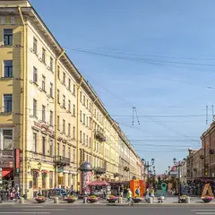
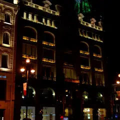

Музей-квартира художника · Центр
Музей-квартира Исаака Бродского
Квартира художника 1920–30-х годов: стены от пола до потолка завешаны его коллекцией русской живописи, как в старом салоне, окна смотрят на площадь.
- ₽ · до 1 500 ₽ на человека
- Новое в каталоге
Позвать сюда: Музей-квартира Исаака БродскогоОткрыть в каталоге: Музей-квартира Исаака БродскогоМаршрут до места: Музей-квартира Исаака Бродского
Адрес и детали
- Адрес
- пл. Искусств, 3
Открыть на Яндекс Картах (в новой вкладке) - Метро
- м. Невский проспект
- Район
- Центр
- Цена
- до 1 500 ₽ на человека
- Проверено
- работает — проверили в ноябре 2026
Входит в подборки
Похожие рядом

Что ещё рядом
- Кафе БенуаКафе · ≈ 2 минуты пешком

Малая Конюшенная улицаПешеходная улица · ≈ 4 минуты пешком- ТанцплощадкаТанцевальный клуб · ≈ 5 минут пешком

Дом книгиКнижный магазин · ≈ 5 минут пешком- Kriek на ИтальянскойПивной ресторан · ≈ 5 минут пешком
- Музей советских игровых автоматовМузей-аркада · ≈ 5 минут пешком
Как позвать
- Выбери план, место или событие — в карточке адрес, цены и маршрут в Яндекс Картах.
- Нажми «Позвать сюда» — соберётся приглашение-игра для свидания или голосование для компании.
- Отправь ссылку в любой мессенджер: тебе ответят, а компания отметит, куда и когда может. Бесплатно и без регистрации.